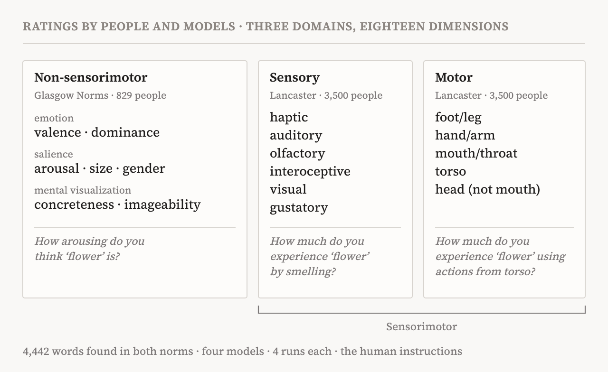
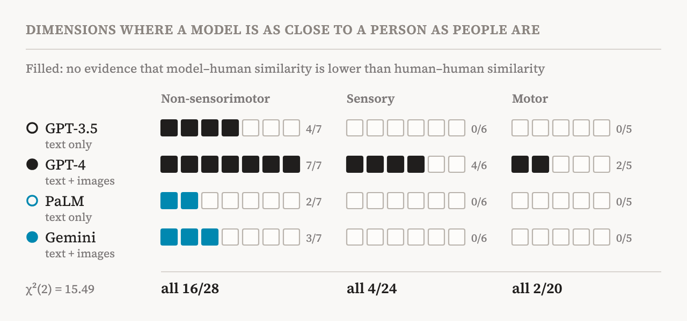
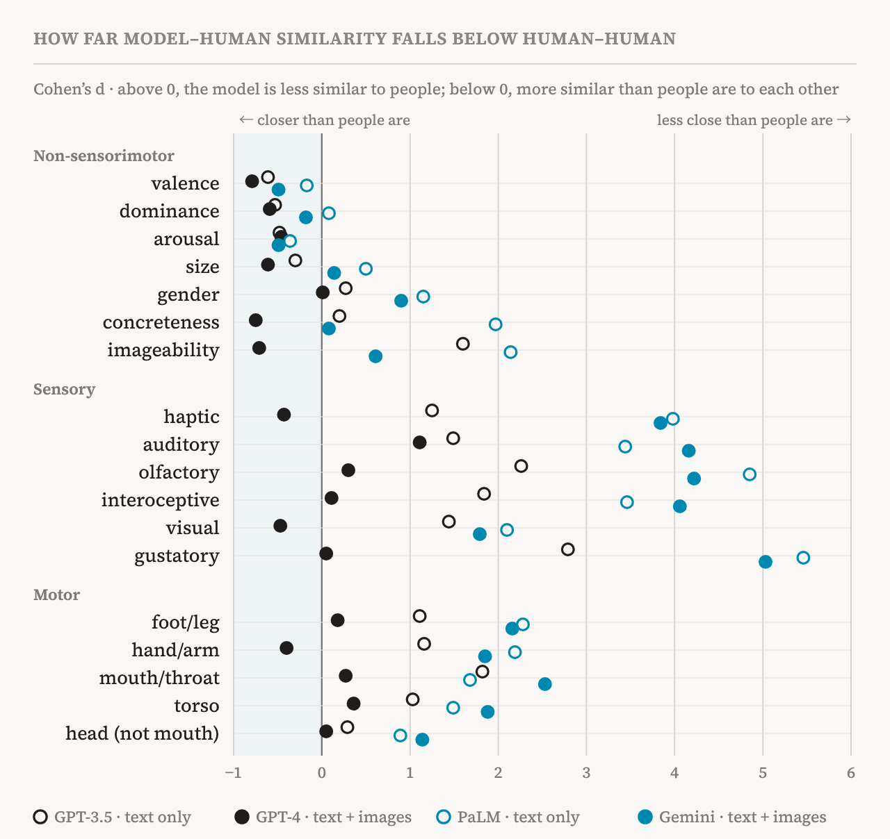
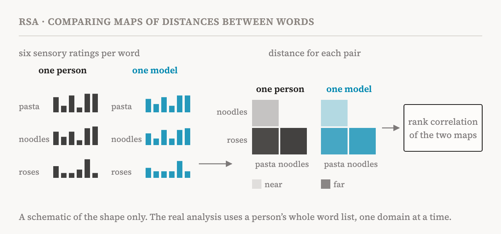

In 2025, Nature Human Behaviour (volume 9) published a paper titled “Large language models without grounding recover non-sensorimotor but not sensorimotor features of human concepts”. Its joint first authors are Qihui Xu of Ohio State University and Yingying Peng of the Hong Kong Polytechnic University, writing with Samuel A. Nastase of Princeton University, Martin Chodorow of the City University of New York, and Minghua Wu and Ping Li of the Hong Kong Polytechnic University.
The paper asks an old question. Can you fully represent the concept ‘flower’ without ever smelling a rose, touching the petals of a daisy or walking through a field of wildflowers? The authors see large language models (LLMs), which learn from language without sensory or motor experience, as a way to test it, and they compare the word ratings LLMs give with the ratings people give.
This article summarizes the paper's main text and methods in full. Every claim and interpretation is the authors'. The boxes headed ‘In plain terms’ are explanations and analogies added to help the reading; they are not in the paper.
Can language alone build concepts?
On one side are theories of grounded cognition. On this view the senses are our gateways to knowledge, and the experience of seeing, touching and smelling flowers is part of how we represent and process ‘flower’. On the other side is work on disembodied artificial neural networks and on blind and partially sighted people, which suggests that learners can form rich concepts from language alone, without direct sensory experience. People born with limited vision, for example, can represent and respond to colour concepts much as sighted people do. So when sensorimotor input is missing, how far can language inform our concepts of the world?
The authors point to limits in the human studies. First, they rarely cover the many dimensions of a concept. Some of what a concept holds is not tied directly to sensorimotor experience, such as the emotional arousal and valence it carries. ‘Flower’ can evoke not only the object but its colours and shapes, the actions of touching it and smelling it, its scents and textures, and emotions and memories. Second, the words tested were narrow, such as colour words or object words only, which makes it hard to generalize to the breadth of everyday concepts, action verbs and abstract concepts included. Third, knowledge can transfer across domains: people without sight can draw on touch and internal sensations, which correlate with visual knowledge. That makes it hard for human studies to control the many sources that may feed a concept. To separate what comes from language from what comes from the senses and the body, the authors argue, one needs a broad and systematic range of concept words, from non-sensorimotor aspects to sensory and motor ones.
LLMs open a new route to the question. With them, the authors say, one can (1) estimate what kinds of structure, and how much, can be extracted from language alone, and (2) examine how input modalities such as text and images shape learning. GPT-3.5 and PaLM were trained on large amounts of text only; GPT-4 and Gemini were trained on language and visual input. Despite these limited inputs, the models perform in remarkably human-like ways on many cognitive tasks. Just as LLMs have shown that syntactic structure can be learned from surface-level exposure to language, they may also learn physical, grounded features of the world from language alone.
Here the views split. Some argue that language itself can act as a surrogate ‘body’ for these models, much like the largely conceptual, ungrounded colour knowledge of blind and partially sighted people. Others hold that multimodal experience is essential for both people and models to grasp concepts efficiently. A model such as GPT-3 relies on text equivalent to 20,000 years of human reading; real, interactive experience, on this view, may yield richer and more interconnected concepts that transfer across domains and reduce the need for so much language.
Two questions, three domains
The authors ask two questions. First, which aspects of human concepts can state-of-the-art LLMs without grounding recover, and which can they not? Second, do LLMs trained on both language and vision match people better on vision-related dimensions than LLMs trained on language alone?
For the first, they compared representations of about 4,442 word concepts between people and two families of state-of-the-art LLMs: OpenAI's GPT-3.5 and GPT-4, and Google's PaLM and Gemini. The comparison covers 18 dimensions grouped into three domains: non-sensorimotor, sensory and motor (Fig. 1). Together they span the range of word and concept processing studied before, from social and emotional aspects and abstract mental imagery to direct bodily experience.

The split is operational: it turns on whether a measure asks directly about a particular sensory or motor experience. A question about how much one experiences ‘flower’ by smelling taps a specific sense and a specific effector, so it belongs to the sensorimotor domains. A question about how arousing ‘flower’ is names no particular sensorimotor experience, so it is non-sensorimotor. The authors stress that this does not mean the non-sensorimotor dimensions are free of embodiment; emotion may be closely tied to bodily states. Still, earlier work found that specific sensory ratings help word processing more than non-sensorimotor dimensions such as concreteness do.
The authors report two main findings. (1) The similarity between LLM and human representations fell from the non-sensorimotor domain to the sensory domain and was smallest in the motor domain. (2) Models that also learned from visual input were more similar to people on vision-related dimensions. Their reading is that learning within language alone recovers much of the non-sensorimotor side of concepts but leaves the sensorimotor side, especially the motor side, impoverished, and that extending experience into vision improves the match not only on vision but on related dimensions such as imageability and touch, which suggests knowledge transfer through multimodal integration.
The human ratings: the Glasgow and Lancaster Norms
The human data are two published sets of word ratings, or norms.
The Glasgow Norms were collected from native English speakers in the University of Glasgow community and rate 5,553 English words on 9 dimensions. They come from 829 participants; the same participants rated every dimension for a given subset of words, an average of 33 people per word. The authors left out familiarity and age of acquisition. Familiarity depends less on meaning and conceptual representation, and age of acquisition is neither the focus of the study nor a valid question to put to an LLM. The remaining seven dimensions fall, following a principal component analysis by the norms' authors, into three groups: emotion (valence, dominance), salience (arousal, size, gender) and mental visualization (concreteness, imageability).
The Lancaster Sensorimotor Norms were collected from experienced users of Amazon's Mechanical Turk and measure how strongly about 40,000 English words are experienced on 11 dimensions: six senses (haptic, auditory, olfactory, interoceptive, visual, gustatory) and the five most common action effectors (foot/leg, hand/arm, mouth/throat, torso, and head excluding the mouth). They come from 3,500 participants, who rated how much they experience everyday concepts through each sense, or through actions with each part of the body.
The two norms share 4,442 words (of the Glasgow Norms' 5,553). The authors analysed the sensory and motor domains on these words and used the full Glasgow set for the non-sensorimotor domain; separate tests on the shared words alone gave highly consistent results (Supplementary Information, section 6). The two norms also differ in who did the rating, so the authors checked the validity of the norms and of the models' responses separately, to make sure differences between domains reflect the dimensions rather than the raters (see ‘Checking the results, 2’ below).
Giving the models the same questionnaire
The models were GPT-3.5 (gpt-3.5-turbo-0301) and GPT-4 (gpt-4, collected between 28 May and 11 June 2023) through the OpenAI API, and PaLM (PaLM2) and Gemini (gemini-1.0-pro) through the Google API. PaLM failed to return ratings for several word lists, so its ratings cover 2,474 words for the sensory dimensions and 4,095 for the motor ones. The temperature was set to 0 for deterministic, consistent responses, and the maximum length was set to the upper limit allowed (2,048 tokens for GPT-3.5, GPT-4 and Gemini, 1,024 for PaLM) so that no response was cut off. Each model was run 4 times to check that its outputs were consistent.
The procedure follows the instructions human participants received. It first explains the dimension. For arousal, for instance, it says that arousal measures excitement versus calmness, describes what makes a word arousing or unarousing, and asks for each word to be rated on a 9-point scale from 1 (very unarousing) to 9 (very arousing). It then lists the words, and the model replies in the form ‘word – rating’. Apart from small changes to get the response format right, the instructions are those the people saw.
The word lists also follow the human data collection. The 5,553 Glasgow words were split into 40 lists (8 of 101 words and 32 of 150). The model rated every word in a list on one dimension before moving to the next, and the order of words and dimensions was randomized in each run. For the Lancaster words, the authors split them into four sublists by concreteness quartile, drew 12 words from each to make 48 per list, and, as the norms did, added calibration and control words, giving 93 lists of 58 words.
One change mattered. Given the Lancaster items, the models consistently replied that they have no biological body and so cannot experience a word by sensing or moving. The authors therefore changed ‘to what extent do you experience’ to ‘to what extent do human beings experience’, and made the same change for the Glasgow Norms for consistency. Asked to answer from human experience, they explain, a model still draws on its internal representations; since those were learned from vast amounts of human-written text, its answers can be read as reflecting people's collective conceptual representation. The Lancaster rating portal also showed the five body parts as pictures. Because GPT-3.5 and PaLM could not take images in a prompt, the authors described the body parts in words for every model.
Result 1: correlations dimension by dimension
The authors used two ways of measuring similarity. One is correlation within each dimension: do people and models agree on how strongly each word rates on that dimension? The other is representational similarity analysis (RSA), which compares how words are arranged relative to one another when the dimensions are taken together. All P values were corrected for multiple comparisons by controlling the false discovery rate (FDR); the Results alone corrected across 157 tests.
First, for each dimension, the authors computed the Spearman rank correlation between model and human ratings at the aggregate and individual levels. At the aggregate level, each word's model rating was averaged over the 4 runs and its human rating over the participants. Both the OpenAI and the Google models correlated strongly with people (Rs > 0.50) on most non-sensorimotor dimensions, and significantly more weakly on the sensory and motor dimensions. Mann–Whitney U tests comparing the model–human correlations on the seven non-sensorimotor dimensions with those on the eleven sensorimotor ones supported the difference for all four models.
Result 2: comparing individuals
Aggregate averages hide how much individual people differ, so the authors also compared individuals. They correlated the ratings of every pair of human participants (human–human) and of every pairing of one model run with one participant (model–human). That gives five distributions per dimension: human–human, GPT-3.5–human, GPT-4–human, PaLM–human and Gemini–human.
The question is whether one model's answers are as close to one person's as one person's are to another's. Taking the human–human correlations as the benchmark of agreement between people, the authors used independent-sample t-tests to ask whether each model–human distribution differs significantly from the human–human one, and Cohen's d to measure the size of the difference. A negative d means that, on that dimension, the model is more similar to people than people are to each other.
The pairs were built as follows. In the Glasgow Norms each participant rated only some of the lists, so correlations were computed within lists and pooled: 22,730 human–human pairs and 5,476 model–human pairs. The Lancaster Norms cover so many words that many were rated by only a few people, so only pairs sharing more than 50 words were kept: 105 human–human pairs per sensory dimension and 196 per motor dimension, and 224 and 440 model–human pairs.
The domains came apart clearly (Fig. 2). Counting the cases with no evidence that the model–human distribution is lower than the human–human one, that is, where a model is as close to a person as people are to each other, the non-sensorimotor domain had 16 of 28 model–dimension pairs. The sensory domain had 4 of 24 and the motor domain 2 of 20 (χ²(2) = 15.49, P < 0.001).
Model by model the contrast is sharper. Across the seven non-sensorimotor dimensions, there was no dimension on which GPT-4 was shown to be less similar to people than people are to each other; the count of such dimensions was 4 for GPT-3.5, 3 for Gemini and 2 for PaLM. Across the six sensory dimensions the count fell to 4 for GPT-4 and to 0 for every other model. Across the five motor dimensions it was 2 for GPT-4 and still 0 for the rest. The authors read this individual-level analysis as showing a growing divergence between models and people from non-sensorimotor to sensorimotor dimensions.

The Cohen's d for each dimension (Fig. 3) shows the same pattern. On valence and arousal all four models had a negative d, and on the seven non-sensorimotor dimensions GPT-4's largest d was 0.01. On the sensory dimensions PaLM and Gemini had large d values, from 1.79 to 5.46, the largest being PaLM's 5.46 on gustatory; on the motor dimensions the two Google models ranged from 0.89 to 2.53. GPT-3.5 ranged from 0.29 to 2.79 on the sensory and motor dimensions, while GPT-4 stayed far lower, from −0.47 to 1.11.

Result 3: representational similarity analysis
Correlations within a dimension look at one dimension at a time, and so can miss how dimensions combine into a word's overall representation and how words relate to each other. The authors' example: ‘pasta’ and ‘roses’ may both rate high on smell, yet people judge ‘pasta’ closer to ‘noodles’ than to ‘roses’, because they also weigh appearance and taste.
RSA addresses this (Fig. 4). For each domain the authors represented every word as a vector; the sensory vector for ‘pasta’, for example, holds its ratings on the six sensory dimensions. From the distances between word vectors they built representational dissimilarity matrices (RDMs), one for each person and each model, using Euclidean distance. The Spearman correlation between each model's RDM and each person's RDM then gave, for each domain, a distribution of similarities between one model and all the people.
They used Euclidean distance rather than Spearman correlation to build the RDMs for a reason. The vectors are short in each domain (7 dimensions for non-sensorimotor, 6 for sensory, 5 for motor), and with so few elements ranking becomes less reliable and more sensitive to small differences. Because Euclidean distance depends on scale, the ratings on each dimension were turned into z-scores first. Only person–model pairs sharing at least 50 words were used: 829 pairs of RDMs for the non-sensorimotor domain, for both families; 435 and 443 for the sensory and motor domains with the GPT models; and 272 and 323 with the Google models.

The tests were run separately for each family, as mixed-effects analyses of variance with domain and model as factors. For the OpenAI models the main effect of domain was significant (ηp² = 0.46). The sensory domain was less similar than the non-sensorimotor domain, but only slightly (d = −0.13); the motor domain was much less similar than the non-sensorimotor domain (d = −1.87) and less similar than the sensory domain too (d = −1.58). For the Google models the main effect of domain was also significant (ηp² = 0.70). Both the sensory (d = −2.46) and the motor domain (d = −2.24) were much less similar than the non-sensorimotor domain, and the motor and sensory domains did not differ significantly (P = 0.077).
The authors take this to mean that LLMs' concepts, and the way they organize words, are closest to people's in the non-sensorimotor domain, weaker in the sensory domain and weakest in the motor domain. As in the earlier analyses, LLMs recover human concepts less and less well as the aspects in question become more sensorimotor.
Adding visual learning
Because the gap between models and people widens on sensorimotor dimensions, the authors consider that grounded experience may be needed for human-like concepts. Hence their second question: do LLMs trained on both language and vision (GPT-4 and Gemini, ‘visual LLMs’) match people's sensorimotor concepts better than LLMs trained on language alone (GPT-3.5 and PaLM, ‘text-only LLMs’)? According to the available information, GPT-4 was pretrained on text and images, and Gemini was pretrained to integrate language with a wide range of visual input, including natural images, charts, screenshots, PDFs and videos. GPT-3.5 and PaLM2 were pretrained on language only.
With the training details of these models undisclosed, the effect of visual training cannot be isolated, so the authors piloted an analysis of whether the added visual learning is associated with the difference in alignment between visual and text-only LLMs. The reasoning: if visual learning affects how well a model matches people, the effect should be most noticeable on the visual dimension and on dimensions that involve some visual interpretation, such as imageability.
They first measured each dimension's ‘visual association strength’: the Spearman correlation, in the human ratings, between that dimension and the visual dimension. The larger its absolute value, the more strongly the dimension is tied to vision. Concreteness (Rs = 0.62) and imageability (Rs = 0.69) were strongly tied to vision; gustatory (Rs = 0.01) and torso (R = 0.02) hardly at all.
They then took, for each dimension, the difference in model–human correlation (Fisher Z-transformed) between the visual and the text-only LLM: GPT-4 against GPT-3.5, and Gemini against PaLM. A higher value means the visual LLM matches people better than the text-only one on that dimension. Separate linear regressions for each family then used visual association strength to predict this change in alignment.
For the OpenAI models, visual association strength positively predicted GPT-4's change in alignment over GPT-3.5 (B = 0.99, P < 0.001); about 70% of the variance in that change (R² = 0.70) was explained by how visual each dimension is. The authors read this as visual input being a major factor in GPT-4's closer match to human concepts, and as showing the important role of visual learning. For the Google models, visual association strength also significantly and positively predicted Gemini's change over PaLM (B = 0.43, P = 0.033), explaining about 26% of the variance (R² = 0.26), which the authors take to show, as with the OpenAI models, that visual input contributes to human-like concepts.
Checking the results, 1: word concreteness
Does the divergence between models and people in the sensory and motor domains survive once word concreteness is taken into account? Earlier work suggested that LLMs may capture the sensorimotor side of people's representations for abstract words, which are thought to rely less on grounding. The authors tested the influence of concreteness in two ways.
First, they computed partial Spearman correlations between human and model ratings, controlling for concreteness. These were very close to the original correlations (Rs = 0.93), so the pattern holds after adjusting for concreteness. Second, a bin analysis: they sorted the words by concreteness, cut them into bins of 100 words, and recorded for each bin its median concreteness and the model–human correlation for its words, giving model–human correlation as a function of concreteness for every model and dimension. A linear regression with concreteness, model and domain as predictors explained about 53% of the variance in model–human correlation (Fisher Z-transformed), but found no credible evidence for a main effect of concreteness (B = −0.00, P = 0.785). The authors conclude that there is no evidence that concreteness is associated with models' alignment or divergence from people across the three domains. They did see interactions between concreteness, domain and model; in the sensory domain, for example, model–human correlations may be stronger for more concrete words (Supplementary Information, section 5.4, with interpretations in section 7.2).
Checking the results, 2: measuring again with other norms
Using LLMs as cognitive models requires checking that their answers are valid. Following standard practice for human tests, the authors evaluated the four models on other norms related to the Glasgow and Lancaster measures. For the Glasgow Norms they used norms of valence, arousal and dominance (Warriner et al., 2013), imageability (Cortese & Fugett, 2004) and concreteness (Brysbaert et al., 2014). The Lancaster Norms have no directly comparable validation norms, so they used conceptually similar ratings of taste and grasp (Amsel et al., 2012). In human ratings, taste is expected to correlate strongly with the gustatory dimension, and grasp moderately with the hand/arm and haptic dimensions. The authors chose these norms because they are public, widely used in human studies and so well validated, and cover dimensions where the models correlate strongly with people (Rs > 0.6).
The procedure: the models answered the items of the validation norms, and their answers were correlated with the human ratings. The authors then correlated each model's ratings on the original norms (Glasgow or Lancaster) with its ratings on the validation norms, and did the same for the human ratings as a benchmark.
| Model | Dimension | Original | Validation |
|---|---|---|---|
| GPT-3.5 | valence | 0.90 | 0.83 |
| GPT-3.5 | dominance | 0.62 | 0.66 |
| GPT-3.5 | arousal | 0.64 | 0.47 |
| GPT-3.5 | concreteness | 0.71 | 0.63 |
| GPT-4 | valence | 0.93 | 0.88 |
| GPT-4 | dominance | 0.63 | 0.67 |
| GPT-4 | arousal | 0.64 | 0.43 |
| GPT-4 | concreteness | 0.93 | 0.87 |
| GPT-4 | imageability | 0.91 | 0.77 |
| GPT-4 | haptic | 0.76 | 0.88 |
| GPT-4 | hand/arm | 0.66 | 0.88 |
| PaLM | valence | 0.78 | 0.44 |
| Gemini | valence | 0.87 | 0.83 |
| Gemini | arousal | 0.66 | 0.15 |
| Gemini | concreteness | 0.75 | 0.66 |
The model–human correlations on the validation norms, except for Gemini on arousal, closely resembled those on the original norms. GPT-3.5's valence correlation with people, for example, was 0.83 on the validation norms and 0.90 on the Glasgow Norms. Gemini's arousal correlation, the exception, was 0.66 on the original norms but 0.15 on the validation norms.
| Model | Dimension | LLM | Human |
|---|---|---|---|
| GPT-3.5 | valence | 0.90 | 0.93 |
| GPT-3.5 | dominance | 0.82 | 0.69 |
| GPT-3.5 | arousal | 0.55 | 0.62 |
| GPT-3.5 | concreteness | 0.61 | 0.93 |
| GPT-4 | valence | 0.92 | 0.93 |
| GPT-4 | dominance | 0.86 | 0.69 |
| GPT-4 | arousal | 0.54 | 0.62 |
| GPT-4 | concreteness | 0.88 | 0.93 |
| GPT-4 | imageability | 0.83 | 0.89 |
| GPT-4 | haptic | 0.55 | 0.55 |
| GPT-4 | hand/arm | 0.68 | 0.55 |
| PaLM | valence | 0.42 | 0.91 |
| Gemini | valence | 0.82 | 0.91 |
| Gemini | arousal | 0.39 | 0.60 |
| Gemini | concreteness | 0.58 | 0.93 |
The OpenAI models' ratings also correlated across the two sets of norms as strongly as people's ratings did. GPT-4's hand/arm ratings, for instance, correlated 0.68 between the validation and Lancaster norms, against 0.55 for human ratings. Given how consistent this is across models and dimensions, the authors conclude that the main findings largely reflect the models' capabilities rather than reliance on particular prompts.
The authors' interpretation
The authors describe the study as using LLMs to test the limits of how conceptual knowledge is acquired, by quantifying which parts of human conceptual knowledge can or cannot be recovered from language alone, or from language and vision together. Learning within language captures human-level representation on non-sensorimotor dimensions such as valence and emotional arousal, but leaves sensorimotor knowledge impoverished. They see this as extending earlier work on ungrounded artificial neural networks, and on congenitally blind and partially sighted people whose concepts resembled those of sighted people. Comparing a broad range of concepts systematically from non-sensorimotor to sensorimotor domains, they found the similarity between LLM and human representations falling step by step, with the largest gaps in the sensorimotor domains. In this they see both how far language can shape complex concepts and how much multimodal input matters for LLMs that are to emulate human conceptual knowledge.
Take ‘flower’ again. Language can capture some of what ‘flower’ connotes, insofar as it emerges from how words are distributed across contexts; positive valence might arise from a sentence like ‘this flower smells joyous’. But the sensorimotor experience of ‘flower’ may cut across linguistic contexts, implicitly shape conceptual knowledge and form many links among objects and experiences in the world. From the strong scent, to the silky touch of petals, to the visual pleasure, the human representation of ‘flower’ binds these experiences and interactions into one category. This kind of associative perceptual learning, in which a concept becomes a hub of interconnected meanings and sensations, may be hard to achieve through language alone, the authors say; real-world interaction like people's is probably essential for full sensory, motor and perceptual representation of concepts.
The authors single out the finding that the gap between people and LLMs was larger for motor dimensions than for sensory ones, an area little studied before. They offer two explanations: (1) motor aspects are described less often in language, which makes them harder for LLMs to learn from language; and (2) motor representations depend more on bodily experience, unlike sensory concepts such as colour, which can be learned through language. Lesions of the motor cortex also impair the processing of action words, they add, which underlines the need for embodiment. All this points to the limits of LLMs in representing motor concepts, given that they lack physical common sense and action-related input.
On multimodal learning, the authors see the finding that LLMs with visual input match people better not only on visual dimensions but on vision-related ones such as touch and imageability as a case of ‘the whole is greater than the sum of its parts’. Such transfer between representations is well documented in people: we can learn the shapes of objects through both sight and touch, and the lateral occipital complex is active both when we see objects and when we touch them. Visual LLMs encode their representations in a continuous, high-dimensional embedding space, where inputs from several modalities may fuse or shift the embeddings; the smooth, continuous structure of that space may be why knowledge from one modality seems to spread to related ones. The authors raise the possibility that models could approach human-like concepts without full sensorimotor experience, partial access being enough to span much of human experience, which may also explain why congenitally blind and partially sighted people have representations similar to those of sighted people.
For future work the authors point to how much sensory access multimodal models need and how far knowledge can transfer between domains, and to models that integrate more modalities, such as Whisper, which processes speech and text, and the vision-language-action model RT-2. They envision LLMs augmented with sensor data and robotics that actively make inferences about, and act on, the physical world, and suggest their findings may inform how training data and multimodal integration develop.
On what LLMs can tell us about human cognition, the authors say they revive the old debate over whether distributional relationships in language can scaffold a wide range of semantic processes. At the same time, their failure to reach human-like sensorimotor understanding from text and incomplete sensorimotor input marks the boundary of learning within language and shows the importance of grounding for human concepts. In this light, the authors see LLMs as a valuable ‘how-possibly’ model of human cognition.
Finally, the authors turn to efficiency. LLMs can approximate certain aspects of conceptual representation, particularly the non-sensorimotor and occasionally bodily dimensions, but they do so by consuming orders of magnitude more text than a person meets in a lifetime and by operating with billions of parameters. Even if, in the limit, multimodal knowledge can be synthesized from language alone, the authors conclude, this kind of learning is inefficient; human learning and knowledge are multimodal, embodied and interactive from the outset.
Limitations the authors note
The first is language. Most work comparing LLMs with human language processing, this study included, is confined to English, and language structure, embodiment effects and neural processing could differ across languages. Still, motor verbs in French and German have been found to evoke similar motor-related brain activity, compared with non-motor verbs, which suggests the English findings may generalize. The authors call for studies in more languages.
The second is training methods. GPT-3.5, for instance, was pretrained on next-token prediction and then refined with supervised learning on human-labelled data and with reinforcement learning from human feedback (RLHF). Because people give labels and feedback drawing on non-linguistic resources, these steps could bring in non-linguistic knowledge. The authors think this does not change their main findings, because RLHF is constrained by mechanisms such as Kullback–Leibler divergence penalties that keep the fine-tuned model close to the pretrained one; RLHF may indirectly import preferences based on real-world experience, but the model's learning is still driven mainly by language.
The third, which the authors call a key limitation, is that the models are proprietary. That makes it hard to understand the separate effects of each learning method, RLHF in particular, so conclusions about how LLMs acquire and process language and embodied experience should be read with this in mind, and LLM research needs more transparency. They do report that DeepSeek-V3, a recent high-performing open-source model, gave results comparable to GPT-4's (Supplementary Fig. 5), supporting their conclusion that LLMs capture non-sensorimotor meaning well but still struggle with the finer sensory and motor features of words. They suggest using smaller, more accessible models to compare prediction-based learning, supervised learning and interaction-based reinforcement learning, since drawing on many sources of knowledge and interacting with the environment have long been recognized as crucial and efficient in human language and concept development.
The LLM data and the analysis code are public on OSF (osf.io/kguwd) and GitHub (qxu1994/LLM_grounding).
Conclusion
The authors compared word ratings from people and LLMs across non-sensorimotor, sensory and motor domains. Aggregate correlations, comparisons between individuals and representational similarity analysis all gave the same order. On dimensions that ask about no particular sense, such as valence and arousal, the LLMs matched people well; on sensory dimensions less well; and on the motor dimensions, which ask about bodily actions, least of all. GPT-4 and Gemini, which also learned from images, gained most over the text-only models on the dimensions most tied to vision. The pattern held with word concreteness controlled and when measured again with other norms.
“The authors close by saying that when we think of flowers, what comes to mind is not merely their names but a vivid symphony in which sight, touch, scent and past sensorimotor experience intertwine with deep emotion, an experience far richer than words alone can hold.”